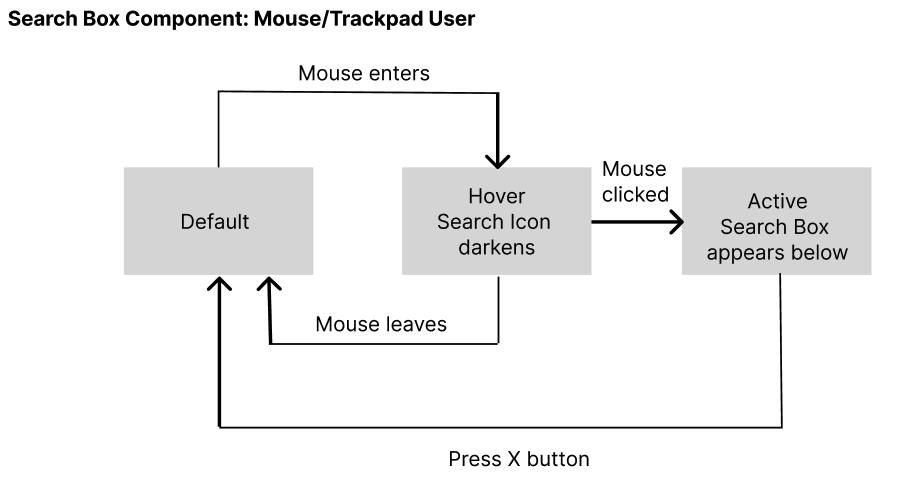

Improving usability and accessibility in search interactions.
The search bar is a critical UI component that allows users to efficiently find content. This project examines how different platforms implement search bars and redesigns the component for improved accessibility and efficiency. For this case study, I analyzed three search bar implementations—Microsoft 365 Copilot, Netflix, and the U.S. Department of State—to understand their strengths and weaknesses. Based on these insights, I then redesigned the search bar to improve learnability, efficiency, and accessibility
We examined how three platforms—Microsoft 365 Copilot, Netflix, and the U.S. Department of State—handle search input via mouse, keyboard, and touch.
| Platform | Mouse/Touchpad | Keyboard |
|---|---|---|
| Microsoft 365 Copilot | Search box is centered in the middle of page making it clearly visible, blinking cursor on click indicates it is interactable, back button available for return to original state. | Tab navigation for forward pass and Shift-tab for backward pass. Drop-down is immediately activated once the tab reaches the search box, removing one additional Enter button from the process. |
| Netflix | Hidden search icon expands when clicked, disappears when clicking elsewhere. | Tab navigation cycles through UI, real-time search updates without pressing Enter. |
| U.S. Department of State | Hidden search icon expands into a large search box, requires an explicit close action. | Tab navigation skips the search icon entirely. |
Examining how platforms visually communicate the state of the search box.
| Platform | Mouse/Trackpad | Keyboard |
|---|---|---|
| Microsoft 365 Copilot | - Hover states: present when mouse hovers over the search box indicated by a darker text font and 3D effects (lower-emphasis surface overlay) on the search box. - Pressed State: When clicked, a blinking cursor appears, reinforcing that users can type. The search box expands with drop-down menu and back button appears for easy return. | When the Tab key is pressed, the search box gets outlined and gains focus. Dropdown Suggestions: Typing in the search box automatically shows a list of suggested searches. |
| Netflix | - Hover State: No hover effect on the search icon, making it less discoverable. - Focused State: Clicking on the icon replaces it with the search box, making the transition clear. | - Tab Focus: A box outline appears around the search icon, indicating focus. - Live Search Updates: As users type, Netflix dynamically refreshes results without requiring an Enter key press (efficient approach). |
| U.S. Department of State | - Hover State: The search icon darkens slightly, making it more noticeable. - Focused State: Clicking the icon expands a disproportionately large search box with oversized text. - Pressed State: Users must manually click the large “X” button to close the search box. | Tab Focus: No keyboard focus indicator; pressing Tab skips over the search box entirely. |
Based on these insights, we redesigned the search bar to enhance accessibility. I will be focusing on the redesign of the search bar from the US Department of State website. In order to do so, we need to analyze its component from a state model perspective.
### **Revised State Model**
Designing an accessible search bar requires balancing simplicity and functionality.